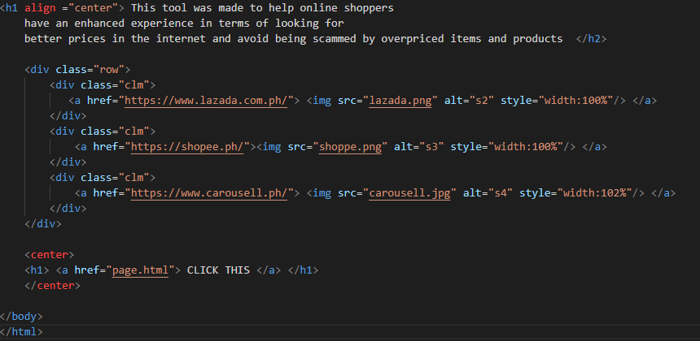

Day Seven To Fourteen (USING VISUAL SUTDIO CODE)
In this 7 days I spent most of it just building the base of the website
which is pretty important I created and put in the text and also took the website links
I also scripted the designs for the websites and fixed some of the links to make the website look
more presentable and to make it usable as well. The base of the website was finished during this 7 days
And all I needed was the search tool that will make the search and will make the comparison of products more easier
